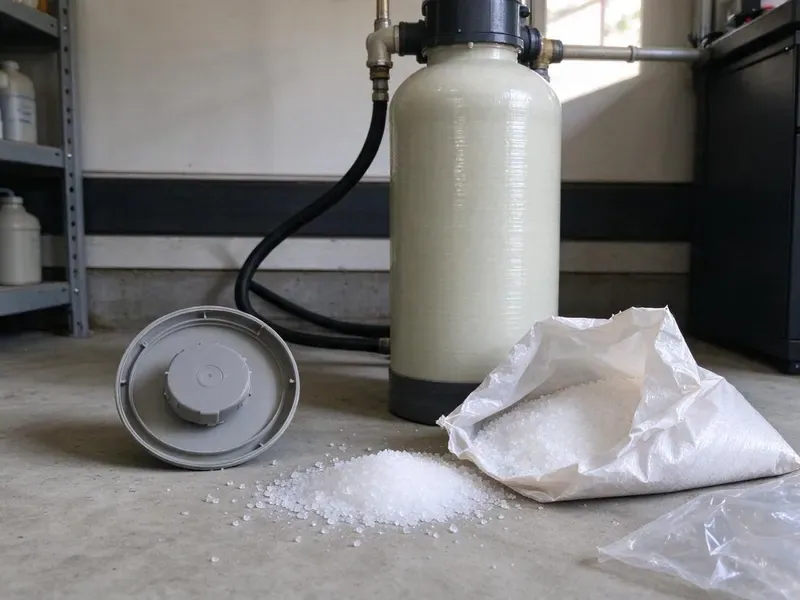

Sump Pump Maintenance in Bristol, CT
Protect your Bristol, CT home from costly basement flooding with reliable sump pump maintenance from GLV Plumbing.
- Same-Day Pump Testing Available
- Guaranteed Work
- Expert Connecticut Plumbers
- Honest Pricing

Get Your Sump Pump Storm Ready in Bristol, CT.
Call GLV Plumbing today to make sure your sump pump is ready for heavy rains and potential flooding.
Professional Sump Pump Maintenance in Bristol, CT by GLV Plumbing
GLV Plumbing maintains submersible and pedestal sump pumps in basements, crawlspaces, window wells and garage drain pits. We clean the basin, test the float switch with real water, inspect the check valve and confirm the discharge line carries water far away from the foundation.
Our expertise includes:
- Check valve, discharge line and freeze guard checks
- Inspect float switches and check valves
- Float switch repair and replacement

Additional Plumbing Maintenance Services in Bristol, CT
Our maintenance and specialty plumbing services in Bristol, CT catch small problems before they become emergencies.


Customers
Why Choose GLV Plumbing for Sump Pump Maintenance in Bristol, CT?
Ignoring your sump pump can lead to costly repairs and water damage. Proactive maintenance by GLV Plumbing helps extend your pump's lifespan and keeps your home safe and dry.
- Backup Systems, We test battery backup pumps and replace worn batteries before storm season.
- Foundation Protection, A working sump pump diverts groundwater away, protecting your home's foundation from cracks and shifts caused by saturated soil.
- Real Water Tests, We fill the pit to trigger the float instead of just flipping a switch.
Citywide Coverage
Our crews cover every neighborhood of Bristol and nearby communities. Homes on hillsides, near drainage channels or in low-lying lots get special attention before storm season.
Experienced Team
Each technician understands how local soils affect drainage around foundations. That experience helps them spot pit and discharge problems others miss.
Safety-First Approach
Safety comes first in all our sump pump maintenance services. We follow all local Bristol and state plumbing codes, so your system is not only functional but also safely installed and maintained. We also handle electrical components with care.
Trusted Certified Bristol Plumbing Services Professionals
At GLV Plumbing, we take pride in providing licensed, certified plumbing services throughout Bristol, CT. Backed by leading industry credentials, our experienced plumbers combine technical skill with genuine customer care. Whether it is repair, installation, or maintenance, we follow strict safety and quality standards to deliver lasting results you can trust.
Call Us Now PHCC Plumbing Contractor Recognition
PHCC Plumbing Contractor Recognition Better Business Bureau (BBB) Accreditation
Better Business Bureau (BBB) Accreditation Angi Certified Pro
Angi Certified Pro ISO 9001 Quality Management Certification
ISO 9001 Quality Management CertificationTrusted Sump Pump Maintenance Services in Bristol, CT
Emergency Sump Pump Maintenance in Bristol
If your sump pump is acting up or has stopped working, GLV Plumbing provides emergency maintenance services in Bristol. We prioritize rapid response to diagnose and address urgent issues, whether it's a jammed impeller, a faulty float switch or a complete pump failure. Our goal is to quickly restore your sump pump's function to prevent immediate flooding and protect your property from water damage.

Residential Sump Pump Maintenance in Bristol
GLV Plumbing offers custom maintenance plans for residential sump pumps in Bristol. Our service includes inspecting the pit for debris, checking the float switch for proper operation and testing the pump's discharge and check valve. We make sure your pump is clean, lubricated and ready to handle any groundwater, protecting your home's foundation. High water tables in low-lying areas of Connecticut can push groundwater into basements during wet seasons and overwork sump pumps.
Battery Backup Pump Maintenance in Bristol
Severe storms often bring power outages along with the rain. A battery backup pump keeps water moving when the main pump loses power or fails. We load test the battery, check the charger and alarm and run the backup pump on its own. Most backup batteries need replacement every three to five years.
Float Switch Repair and Adjustment in Bristol, CT
The float switch is the most common reason a sump pump fails to start. Tethered floats can tangle on the pump body, and vertical floats can stick from mineral crust or debris. We clean or replace the switch and set the on and off levels so the pump does not short cycle. Electronic sensor switches are an option for tight pits where floats get stuck.
Zoeller Sump Pump Maintenance in Bristol
GLV Plumbing is experienced in servicing Zoeller sump pumps, a widely trusted brand known for its durability. Our maintenance includes specific checks for Zoeller models, such as inspecting the cast iron housing for cracks, ensuring the motor is running smoothly and testing the float switch assembly for correct activation. We stock common replacement parts for quick repairs, keeping your Zoeller pump in peak condition.
Crawlspace and Window Well Pumps in Bristol, CT
Not every sump sits in a basement. Many homes with crawlspaces or deep window wells use small pumps to clear runoff. We service these smaller units, clear their screens and confirm the discharge reaches daylight or an approved drain. Outdoor faucets should be shut off from inside and drained each fall, and frost-free hose bibs are a smart upgrade.
Commercial Sump Pump Maintenance in Bristol, CT
GLV Plumbing also offers thorough sump pump maintenance for commercial properties in Bristol, CT. Commercial systems often handle larger volumes of water and require more frequent, detailed checks. We ensure compliance with commercial plumbing codes, inspect industrial-grade components and provide detailed reports to help businesses maintain a dry and safe environment, protecting their assets and operations.

Pre-Storm Season Pump Testing in Bristol
Heavy downpours can overload older sewer systems and push water back into basements, so a backwater valve can be a sensible upgrade. We test your pump ahead of the rainy season by filling the pit until the float trips. We watch the pump empty the basin, listen for grinding bearings and measure how fast it cycles. If the pump struggles, you still have time to fix it before the first big storm.
Sump Pump Maintenance Near Me in Bristol, CT
We know where water tends to pool in Bristol neighborhoods during heavy storms. That local experience helps us set up your pump and discharge correctly. Your below-grade spaces stay dry when the rain comes.
When you search for 'sump pump maintenance near me' in Bristol, CT, look no further than GLV Plumbing. Our local team is dedicated to providing fast and efficient service to protect your home's foundation and basement. We understand the challenges posed by local weather patterns and soil conditions, so our solutions are matched to your needs.
GLV Plumbing at a Glance
- Licensed and insured plumbers serving Bristol, CT
- 24/7 emergency service with same-day scheduling
- Clear written estimates, no hidden fees
- 4.8-star rated by 946+ Connecticut customers
Bristol Map
Bristol Information
- Population
- 61,601
- Area codes
- 860/475/203
- Service area
- Bristol and communities within 40 miles
- Nearby
- New Britain, Waterbury, West Hartford, Meriden
A well-maintained sump pump is vital for homes in Bristol, CT, especially when heavy rainfall and dense soils push groundwater pressure up against foundations.
Expert Services
Trust our professionals for reliable GLV Plumbing solutions in Bristol, CT.
Our Specialized Plumbing Services in Bristol, CT
At GLV Plumbing, we provide a complete range of plumbing services across Bristol, CT. From leak detection to full system installations, our team ensures fast, precise, and affordable service for both residential and commercial properties. Explore our core services below:


How Our Sump Pump Maintenance Process Works in Bristol, CT
Our step-by-step approach to sump pump maintenance means every critical component is inspected and functioning correctly.
Request a Quote
Call us at (860) 487-7330 or through our website to schedule your sump pump maintenance service. We'll gather basic information about your system and set up a convenient appointment time.
On-Site Inspection
Our certified technician arrives on time to perform a visual inspection of your sump pump, pit and discharge lines. We check for any obvious signs of damage or wear.
System Testing
We thoroughly test the sump pump's operation, including the float switch and check valve. We also test any battery backup systems to confirm they activate properly.
Frequently Asked Questions About Sump Pump Maintenance in Bristol
The cost for sump pump maintenance in Bristol, CT usually ranges from $100 to $250, depending on the pump type and its condition. This price usually includes a thorough inspection, cleaning and operational testing. Any necessary repairs or parts replacement would be an additional cost, which we would quote upfront.
The best time is a few weeks before your wettest season starts. Homes that see snow may also want a fall check before winter storms and snowmelt.
Routine maintenance typically does not require a permit. However, if a significant repair involves altering the discharge line or replacing the entire unit, especially if electrical work is involved, a local permit might be necessary. We handle all permit requirements for you.
GLV Plumbing services all major brands of sump pumps common in Bristol homes, including Zoeller, Wayne, Little Giant, Liberty Pumps and Flotec. Our technicians are trained on the specifics of many models, providing expert care regardless of your pump's manufacturer.
Not every home does, but homes with basements, crawlspaces, below-grade garages or low-lying lots often rely on them. Heavy downpours can overload older sewer systems and push water back into basements, so a backwater valve can be a sensible upgrade.
A large share of homes in Connecticut use private wells, which can be acidic or carry iron, manganese, or radon that require treatment. Where groundwater is hard, mineral deposits can build up on the pump's impeller and in the pit, reducing efficiency and possibly causing clogs or damage over time. Regular maintenance helps limit these effects.
If your primary sump pump fails during a power outage and you don't have a working battery backup or water-powered backup system, your basement is at risk of flooding. This underscores the importance of maintaining backup systems.
Most visits take 45 minutes to an hour. Replacing a check valve or float on the same visit adds a bit of time.
What People Are Saying About Our Plumbing Experts?

Patricia H.
We had a slab leak that two other companies could not find. GLV Plumbing located it in under an hour, explained our options, and the price matched the quote to the dollar.
Slab Leak Repair · Hartford, CT
Laura S.
I scheduled a water heater replacement, and the team made the process smooth and affordable. The new unit works perfectly, and they cleaned up after completing the job.
Water Heater Replacement · Waterbury, CT
James P.
Our commercial plumbing system had a leak under the sink, and GLV Plumbing handled it professionally. The plumbers arrived quickly and restored everything without disruption to our customers.
Commercial Plumbing · Waterbury, CT
Daniel K.
A pipe burst at 11 pm and they actually answered. The plumber showed up within the hour, shut everything down, and had us back to normal the next morning. Could not ask for more.
Emergency Plumbing · West Hartford, CTSofia M.
Two new toilets installed in one visit, no mess left behind, and the tech even adjusted a faucet he noticed was dripping. Fair pricing and really friendly.
Toilet Installation · West Hartford, CT
Emily R.
I called GLV Plumbing for plumbing repair, and the technician was fast, polite, and thorough. They explained the problem clearly and fixed it the same day. I will definitely hire them again. Highly recommended!
Plumbing Repair · New Britain, CT